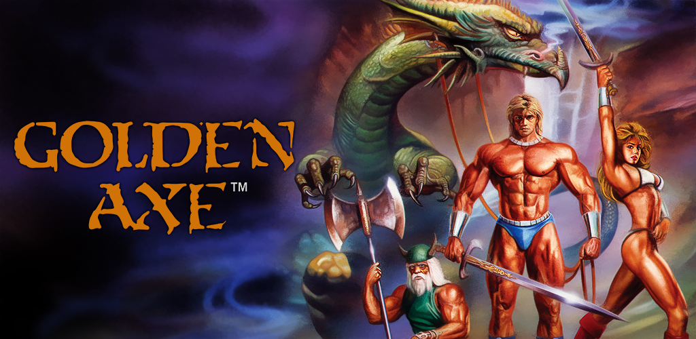

Golden Axe
imagem do jogo Golden Axe
Golden Axe IIZゴールデンアックスZGooruden Akkusu ({{{2}}}Golden Axe IIZゴールデンアックスZGooruden Akkusu?) é um videogame beat'em up side-scrolling lançado em 1989 pela Sega para o arcade System 16-B.[2] É o primeiro jogo da série Golden Axe.Makoto Uchida foi o designer principal do jogo, e também foi responsável pela criação de Altered Beast. O jogo foi portado para os consoles Mega Drive e Master System, entre muitos outros sistemas.
O jogo se passa na terra fictícia nomeada Yuria. um mundo de alta fantasia no estilo Conan o Bárbaro. Uma entidade maléfica conhecida como Death Adder capturou o rei e sua filha, mantendo os dois em cativeiro dentro de seu castelo. Death Adder também encontra o Golden Axe (Machado de Ouro), que é o símbolo de Yuria, com isso, ele ameaça destruir tanto o machado quanto a família real, a menos que o povo de Yuria o aceite como governante.
Então, três guerreiros partem em uma missão de salvar Yuria e vingar suas perdas pelas mãos de Death Adder. O primeiro é Gilius Thunderhead, das minas de Wolud, que teve seu irmão gêmeo assassinado pelos soldados de Death Adder. O segundo é o bárbaro Ax Battler, que procura vingança pelo assassinato de sua mãe. E no final, mas não menos importante, temos Tyris Flare, que teve seus pais assassinados pelo próprio Death Adder.
Os guerreiros resgataram os habitantes da então saqueada Turtle Village (Vilarejo Tartaruga), que tem esse nome por se encontrar no casco de uma tartaruga gigante. Essa tartaruga leva os heróis através do mar e em seguida voaram para o castelo de Death Adder nas costas de uma águia gigante. Uma vez no castelo, os heróis derrotam Death Adder, que estava dominando o Golden Axe e salvam Yuria.
Nas versões de PC e Mega Drive, os heróis lutam contra o mentor de Death Adder, o Death Bringer, como o verdadeiro chefe final. Depois da batalha, eles recebem o Golden Axe e são abençoados com a imortalidade.
Os três personagens têm as qualidades de luta e magia balanceadas: Tyris Flare é a menos habilidosa na luta, porém possui a magia mais forte; Gilius Thunderhead é o guerreiro mais eficiente, porém sua magia é fraca; Ax Battler é um lutador mediano e sua magia é mais fraca do que a de Tyris Flare, porém mais forte do que a de Gilius Thunderhead. Na versão para Master System, só é possível jogar com o personagem Ax Battler, e, na versão para Mega Drive (SEGA Genesis), todos os três personagens estão disponíveis, inclusive para partida cooperativa com dois jogadores simultâneos.
Na verdade o jogo não explicita que Gilius iria se matar após cumprir sua vingança. Isso é uma dedução errada, uma vez que ele volta em golden axe 2 e 3. Quanto as habilidades de luta, as de Tyris e Gilius são equiparadas, sendo Ax o pior.